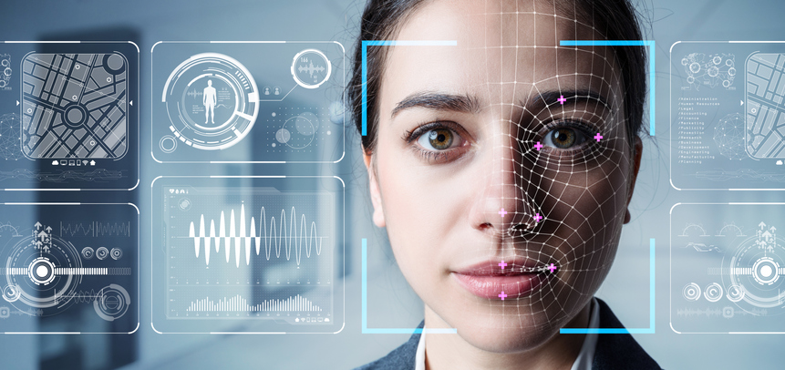

El reconocimiento de patrones es una serie de sistemas capaces de extraer información de objetos físicos para definir patrones, como imágenes, señales electromagnéticas, etc. Tiene aplicación en visión artificial, segmentación de imágenes, detección de objetos, procesamiento de datos de radar, reconocimiento de voz, clasificación de texto y mucho más. Trata con unos problemas de clasificación que se desea que sean delegados por una máquina, como por ejemplo, escaneo de huellas dactilares, de iris, facial, reconocimiento óptico de caracteres, etc. que permiten el reconocimiento de los usuarios dueños del dicho móvil, tablet, ordenador, entre otros.

Para clasificar el reconocimiento de patrones existen dos métodos, supervisada y no supervisada. Para aplicar el reconocimiento de patrones supervisado, se necesita un conjunto de datos etiquetados de gran tamaño; sin embargo, en caso de no contar con ellos, se puede aplicar un enfoque no supervisado.
- Los métodos de clasificación supervisada aplican algoritmos de aprendizaje supervisado a los datos de entrada, para establecer correspondencias entre los datos de entrenamiento etiquetados manualmente y los resultados deseados. Se usan en el reconocimiento óptico de caracteres y detección y clasificación de objetos.
-Los métodos de clasificación no supervisada intentan encontrar estructuras ocultas en datos no etiquetados con técnicas de segmentación o agrupación en clusters. Entre ellos destacamos:
· Clusters de K-means: realiza la división de objetos en grupos que comparten similitudes y son diferentes a los objetos que pertenecen a otro grupo.
· Modelos de mezcla gaussiana: modelo probabilístico que asume que todos los puntos de datos son generados de una mezcla de un número finito de distribuciones Gaussianas con parámetros desconocidos.
· Modelos ocultos de Markov: modelo estadístico en el que se asume que el sistema a modelar es un proceso de Márkov de parámetros desconocidos. El objetivo es determinar los parámetros desconocidos de dicha cadena a partir de los parámetros observables.
También usamos este método para la detección de objetos y la segmentación de imágenes.